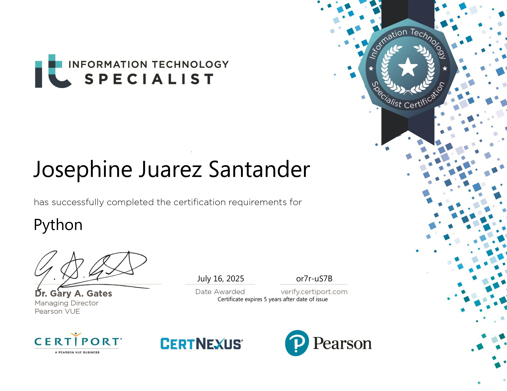
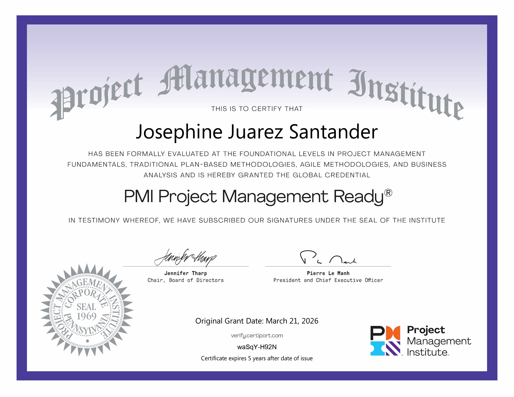
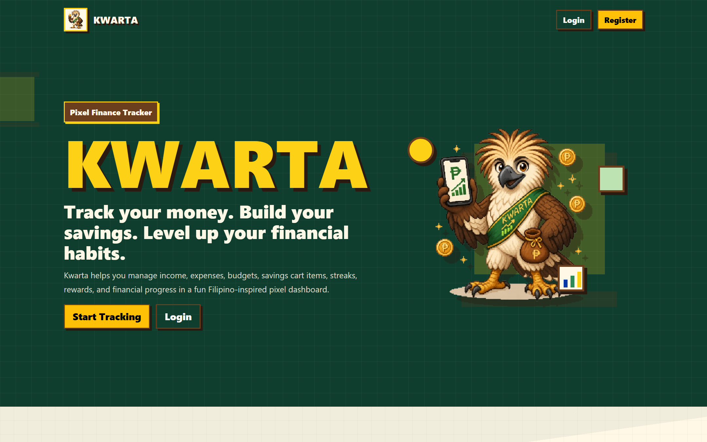
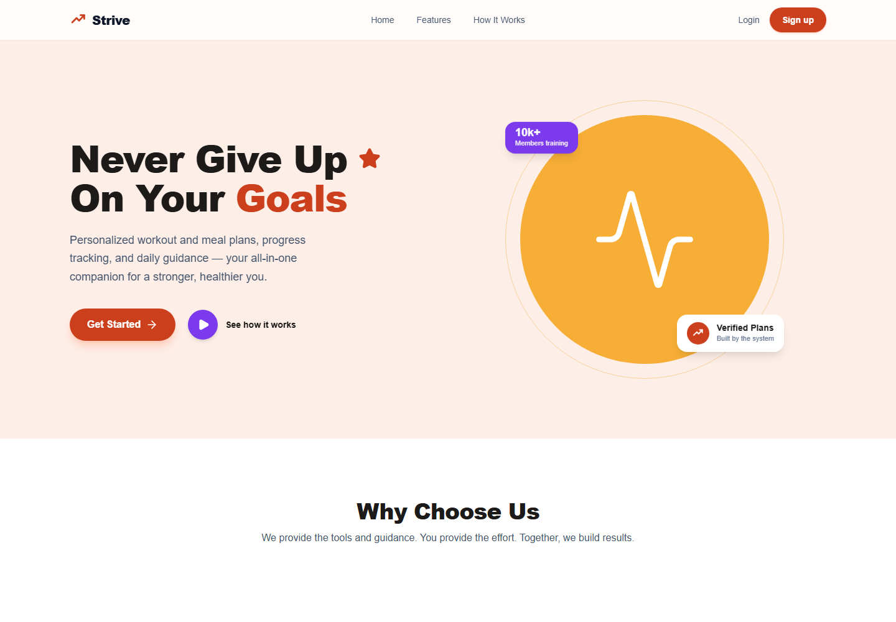

A clean, readable layout with enough breathing room to feel genuinely polished.
Josephine J. Santander
I build clean web interfaces
Computer Science student specializing in Software Engineering — focused on clarity, spacing, and strong visual rhythm to turn ideas into polished, responsive experiences.
- 0+
- Years Learning
- 0+
- Core Skills
- 0
- Certifications
01 About
A little about me
Placeholder Profile Image
I'm a software engineering student who enjoys turning ideas into clean, usable, and visually engaging web experiences.
I care about the small details — spacing, framing, and type scale — that make an interface feel polished and effortless. This portfolio reflects how I like to work: calm, modern, and intentional.
Built to grow — ready to support real photos, stories, and project highlights.
Designed to stay accessible and responsive across desktop, tablet, and mobile.
02 Education
Where I've studied
University of Perpetual Help System DALTA - Molino Campus
-
Address
3 Molino Rd, Molino III, Bacoor, Cavite
-
Program / Track
Information and Communication Technology (ICT)
FEU Institute of Technology
-
Address
Padre Paredes St, Sampaloc, Manila, 1015 Metro Manila
-
Program
Bachelor of Science in Computer Science with specialization in Software Engineering
03 Skills
Technologies and Skills I’ve Worked With
A practical overview of the technologies and development practices I have applied across financial, fitness, educational, inventory management, and other web application projects.
Frontend Development
Built responsive and user-friendly interfaces for dashboards, landing pages, forms, and web applications.
Applied in: Kwarta, Strive
Backend Development
Developed application logic, form processing, validation, and CRUD-based functionality for web applications.
Applied in: Kwarta and web application projects
Database Development
Worked with relational databases to manage users, transactions, goals, products, records, and application data.
Applied in: Kwarta and database-backed apps
UI/UX Design
Designed structured user flows and responsive interfaces focused on usability, consistency, and clear navigation.
Applied in: Kwarta, Strive, portfolio UI
Software Engineering
Applied software development practices to organize, test, improve, and maintain web application projects.
Applied in: coursework, thesis work, and web projects
Tools and Development Workflow
Used development, deployment, documentation, and collaboration tools throughout the project lifecycle.
Applied in: portfolio, deployments, and Kiro CLI workshop
04 Certifications
Proof of my learning
Python

PMI Project Management Ready

Complete Guide to Android Development with Kotlin for Beginners

05 Projects
Things I've been building
Featured

Featured

Placeholder Image
Placeholder Project Title
Space for a concise summary, stack notes, or a short case study preview.
Placeholder Image
Placeholder Project Title
Built to stay balanced even when you later replace this with real project text.
06 Activities & Involvement
Beyond the classroom
07 Contact
Let's connect
Have an opportunity or just want to say hi? I'd love to hear from you.
-
Emailsantanderjosephine24@gmail.com
-
LinkedInjosephine-santander-796883357
-
GitHubgithub.com/josntndr